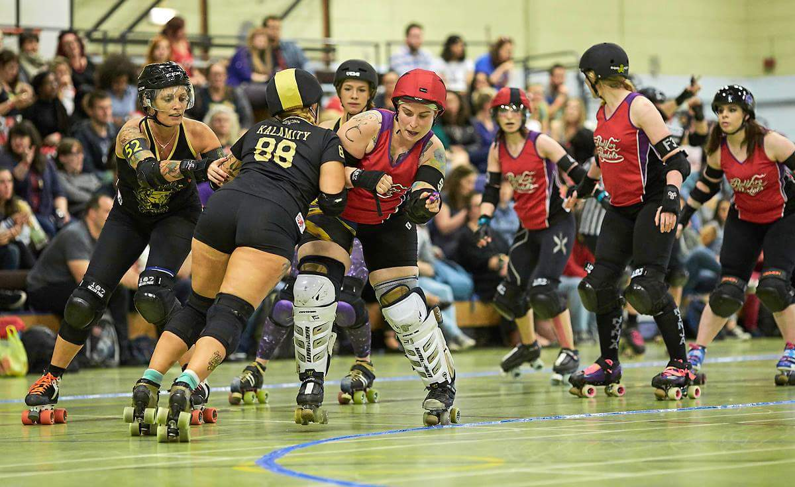

Power of Scotland's Assistant Coach: Rosie Peacock
As Caley Kapowski reported for the blog, Scottish Men's National Team, Power of Scotland, are going all out to raise money for the trip to Calgary for the second ever Men's Roller Derby World Cup.
One member of the Power of Scotland Team who has recently started her own fundraising endeavour is new Assistant Coach, Rosie Peacock. As she's offering roller derby coaching, we caught up with her to talk a bit about her coaching experience, and what she's offering for those who may be interested. Rosie is also currently on Auld Reekie Roller Girls All-Stars roster.
- Before we start talking about Power of Scotland specifically, we should start by spending a bit of time just to introduce you yourself...
Also, I've been part of Team Metal Legs, which is for people who've been injured playing roller derby and forced to be off-skates for 3 months or more. We've done a lot of work, and that's just trying to build people's physical and mental confidence back up, after pretty traumatic breaks. And that's been a lot of fun to do as well.
- And a lot of people seem to like you, too: you won the Talk Derby To Me [Podcast] "Personality" award for 2015.
But I remember coming up for a scrim, and it was my first scrim back after my knee operation, and there was this massive guy, that looked like a Viking, looking quite nervous. [laughs] It was his first ever scrim. And that was, now Power of Scotland skater, Optimus Grime. I could just see so much potential in him, and rightly so, he's an incredible skater, puts in incredible hard work as well.
But yeah, he seems to be quite fond of me, which is really nice because it's nice to have someone who's that cool who's on your side. He and Marryk [Talk Derby To Me co-host King Crazy] have been [inaudible] for quite a long time, we've announced together a few times, yeah, and I think because those guys… I think Grime nominated me and then Marryk's obviously quite fond of me too. (I don't know why! Maybe it's because I baked cookies for him one time!). But [winning the award] was really amazing, actually, I had a little cry about that. Don't tell anyone, but yeah.
- But, coming back to Power of Scotland, you fairly recently became Assistant Coach. How has that experience been?
So, I get to see these guys progress, from tryouts to gelling as a team, and really starting to hone in on some of the tactics and bring it together as a unit. Because they're all, as individuals, enormously talented guys, but I think the key for these National teams is to get the team working together as a unit. These guys will all be the best skaters in their home leagues, and used to fulfilling certain roles within their home leagues, but within the Power of Scotland unit, you know, they very much need to learn to trust one another as a unit. Which is a challenge when you're used to being the guy who's maybe the last one, the last line of defence, or the jammer who doesn't need to take offence. When you're going to be playing Team USA, then you're going to be needing some offence!
- It's hard to emphasise how important this is for a National team in particular - "top dogs playing together", some of whom aren't domiciled in Scotland, who need to adjust to the different context.
But yeah, there's guys obviously eligible for tryouts from down in London, all kinds of leagues, and actually, those guys have gelled in really really well. It's really good - but I think it is a bit of a mindset change, because going from being possibly the best one or two guys in the league and being in a probably one-off-one-on kind of rotation to perhaps being in a one-in-three or whatever, that's a bit of an adjustment too.
- Managing personalities, the "superstars"?
- Ah, the glory hounds?
 Rosie captaining the Hellfire Harlots against Newcastle Roller Girls in the British Champs Tier 2 Playoffs Final. (Credit: Jason "Roller Derby on Film" Ruffell)
- And of course, "The Stef Mainey" of Roller Derby is a very strong team player herself!
- So, you will be travelling to Calgary, the rest of the Team will be travelling to Calgary…
The way that PoS are running it, is that there's an expectation that everyone will be doing something to fundraise, and if you've managed to raise £50 or £500 is irrelevant, it's about the effort that we're putting in as a team, to try and help one another with the cost of just getting over there and back again.
So, a bit late to the party, so I've got a bit of time to make up for that now!
- Power of Scotland are, themselves, offering Power of Scotland guest coaching as a fundraising approach (Ayrshire Roller Derby and Doonhame Derby Dolls both recently benefitted from this, for example). I guess that your coaching initiative is in addition to this?
- I know you don't like bigging yourself up too much, but we should say that you are a rather experienced coach!
Generally the newer teams starting out tend to be looking for guest coaches a lot more. Erm, because you can get to a certain level, with watching footage and coming up with stuff yourself, but then eventually you do want someone that's perhaps got a bit more experience to come and inject a few new ideas and kindof...
I mean, recently we had [WFTDA #2 Ranked Victorian Roller Derby League's] Lorrae Adams come over to ARRG. My mind was blown, it was like: "wow, I can use my shoulders!" I guess I've never used my shoulders in Roller Derby because my hips are so much wider; every time I try and come in with a shoulder, it's a bit pointless - my bum's already there! But she really opened my eyes to a whole different array of ways to use my body to make people fall over, which was great!
And I think, sometimes, passing that information on to other leagues, but in a way that works for them, is really crucial. I don't come in and just coach what I like to do! I ask the league what they're looking for, ask them if they've got any footage to get an idea of where they're at, and what the next steps for progress would be, and to make sure it's stuff that's going to work for them, drills they can take away and make their own, and develop. Rather than coming in and being all like "this is how I play roller derby, so everyone should play roller derby this way".
[For example], a lot of leagues will be doing different kinds of defensive wall now. In Scotland, people are predominantly, I think, using the braced three-wall with a sort of spare-guy. But perhaps elsewhere, you'll see a lot more of the cube-walls, and rotational walls, happening. So it's really important as a coach to understand and be able to coach all these things, whether your home league uses them or not.
- So far you've talked about experiences with Women's derby, but we should say thay you've skated Coed with guys on track a lot too...
But yeah, so I've done load of these kind of fun [events], like Last Action Hero, SciFight, just generally, if there's an opportunity to play any kind of high level Coed, I'll want to be there. We're defending our championship titles for SciFight this year as well, so that's Game On!
- I guess it's inevitable that Coed experience involves lots of exhibition teams; there's not a lot of permanent teams (although that's changing, especially in Scotland!).
There's loads of guys - there's a couple, [for example] Alan [Watt] in Power of Scotland who is an incredible blocker with his hips. And it really annoys me actually when people say "Oh, he blocks like a girl!", because, no, he blocks like an incredible skater, gender has nothing to do with it!
And there's teammates that I've skated with that their shoulders are much broader than their hips, and they've got incredible power in their shoulders. So, I would love it if it got to the stage where gender just didn't matter in roller derby. If it was "so, this is the team from [say] Manchester", and it's the team of the best skaters in Manchester, and how they identify in terms of their gender, or what their organs are, has no relevance. That's what I'd really like to see.
- Gender policies and feelings about this are changing, though. For example, the UKRDA gender policy was an early leader in this kind of thing (before WFTDA themselves updated a bit).
- They just need to drop the 'M' from MRDA…
- and a lot of the newer leagues in Scotland are defaulting to Coed.
So, it's like "wouldn't it be nice if we could see WFTDA and MRDA merge to 'RDA', and [have] that ranking system take off, and make that conscious decision to stop caring about gender, in terms of athletic ability".
I'm not saying gender's not important to people on an individual basis - of course it is - but in terms of having an impact on someone's ability to perform in a sport, I think it's absolutely irrelevant.
- Sure, I think there's probably still sports where there's a genuine gender gap (powerlifting, for example), although they do tend to be narrowing over time.
- And you get lighter guys too, it's not just "Big Men versus Small Women". Jim Whyte, on PoS, is a pretty lightly built guy, but he does great things on track.
- This seems like a good place to start wrapping up; is there anything you'd like to particularly emphasise to the readers?
There's quite a lot of weekends between now, and July 20th, which is when we fly out, some of them are already pretty fully booked, but there's lots of weekends free. And I'm doing quite a lot of travelling anyway, so hopefully, I can book things in when I'm already in the local area.
- You could even try to get in some coaching when you're over at the Big O with Auld Reekie!
- Sure, but there's tons of smaller leagues in the USA too. Just like US skaters have basically just heard of London Rollergirls; skaters in the UK only hear about the big leagues in the USA. You don't see the smaller, just as interesting, leagues from the distance...
Rosie is happy to discuss coaching anywhere in the UK, subject to travel costs for longer trips. Her signup thread on the Facebook UK Derby Dialogue Group is here: https://m.facebook.com/story.php?story_fbid=10150630253249969&id=500404968, but you can also contact her directly to arrange coaching.